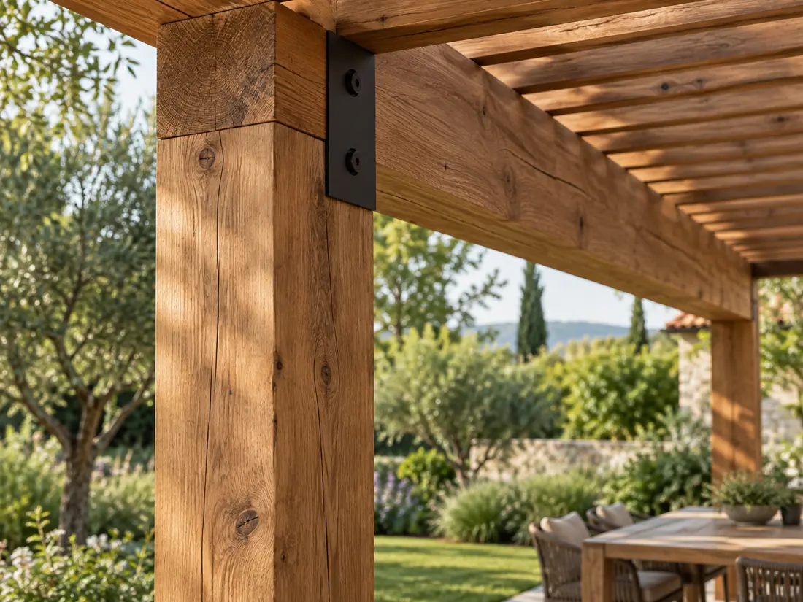

Razgovor pre svega.
Vaša ideja, navike i prostor usmeravaju projekat. Postavljamo pitanja pre nego što predložimo rešenje.
Ja sam Nemanja. Od prvog razgovora do montaže, vaš projekat ima svog majstora.
Upoznajmo vaš projekat
Da je terasa prijatna za sedenje. Da se vrata garaže otvaraju bez smetnje. Da baštici možete da priđete sa svih strana.
Takvi detalji određuju kako prostor zaista funkcioniše. Zato prvo slušamo šta vam treba, zatim merimo i predlažemo rešenje.
Radimo sa drvetom i metalom. Biramo materijale i završnu obradu prema nameni, uz dogovor o izgledu, ceni i roku.
Vaša ideja, navike i prostor usmeravaju projekat. Postavljamo pitanja pre nego što predložimo rešenje.
Prilagođavamo dimenzije i detalje stvarnim uslovima na lokaciji.
Preciziramo obim posla, materijale, cenu i rok pre izrade.
Prolazimo kroz izvedene detalje i razgovaramo o održavanju vašeg novog prostora.
Jedan majstor. Dogovor koji je lako pratiti.
Čujemo vašu ideju, upoznajemo prostor i dogovaramo potrebne mere.
Biramo materijale i definišemo rešenje, cenu i termin izrade.
Pripremamo svaki element i sastavljamo celinu na vašoj lokaciji.
Prolazimo kroz detalje i dajemo preporuke za održavanje.
Upoznajte usluge i pronađite ideju za svoje dvorište.